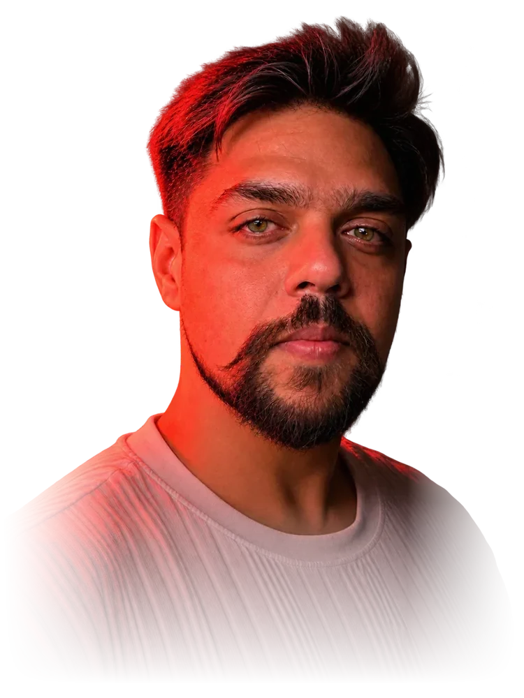
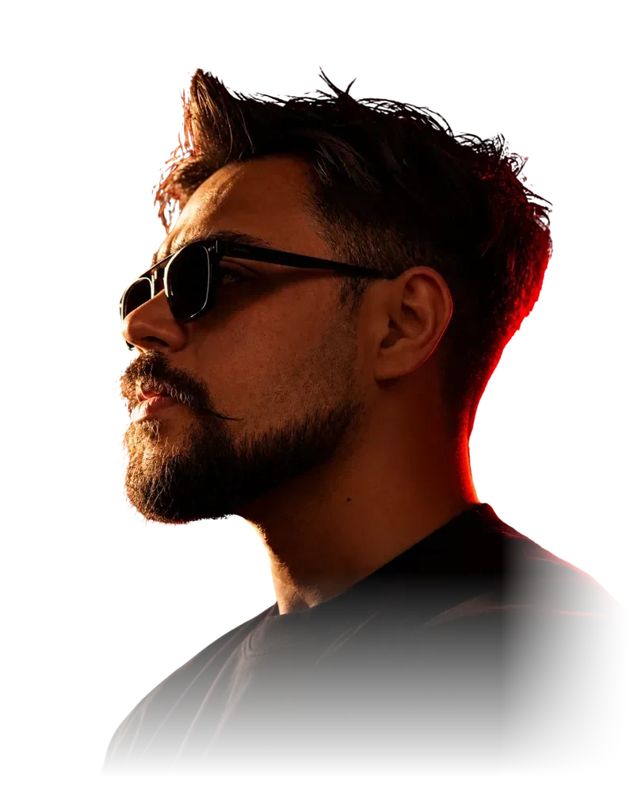
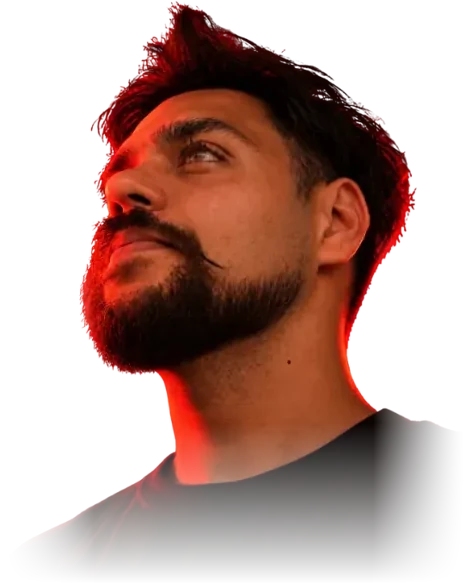
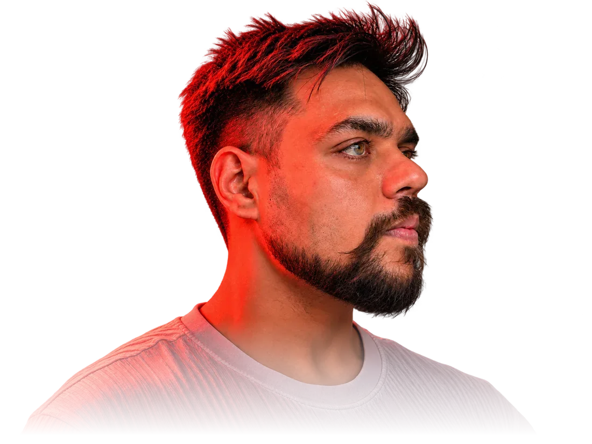
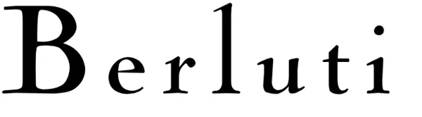
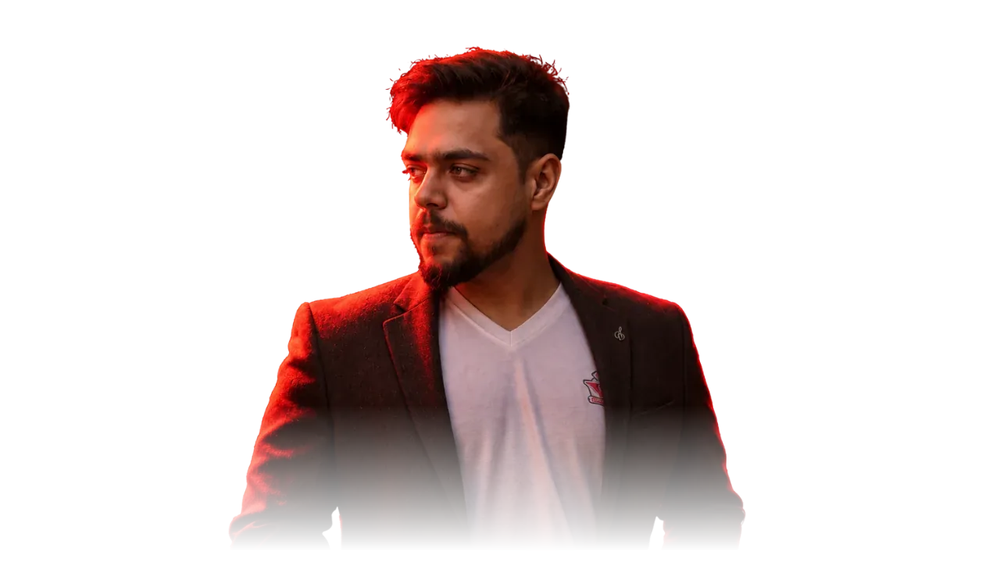

Portfolio
AI Creative Director · Music Producer · DJ · Creative TechnologistTurning sound, code & imagination into extraordinary experiences.
Generative AI Portfolio
Hello, I'm / Prateek / Vats
After my stint in Merchant Navy, I work at the intersection of music, artificial intelligence, and creative technology—transforming bold ideas into meaningful experiences. From sound and storytelling to intelligent systems, I believe creativity has no boundaries.

Generative AI Portfolio
My / Education
- Science Stream in 12th
- Diploma in Nautical Science
- Music Production, Sound Design and DJing
- Artificial Intelligence and Data Science

Generative AI Portfolio
Personal / Skills
- Nautical Navigation
- Seamanship
- First Aid & Fire Fighting
- Creative Direction
- Generative AI
- Agentic AI
- Music Production
- Sound Design
- Songwriting
- DJing
- Video Editing
- Event Management
- Music Distribution & Publishing
- Music Rights & Royalty Management
- AI-Assisted Storytelling & Filmmaking
- Social Media Automation
- AI Workflow Automation
- Digital Product Development
- Digital Platform Development
- AI-Assisted Web Development
- Team Building
- Business Development

Generative AI Portfolio
Work / Experience
- Mediterranean Shipping Company (MSC)2011 – 2016
- DRIP (Music Producer/DJ)2016 – Present
- Blue Turtle Entertainment2016 – 2023
- Sound of Drip Musictech PVT LTD2022 – Present

Generative AI Portfolio
First / Project
SIP Mutual Funds Awareness Ad
Spec work
Generative AI Portfolio
Second / Project
Micro Drama · Shatranj Ke Daane
Generative AI Portfolio
Sixth / Project
U.G.C.

Spec workGenerative AI Portfolio
Some / Gen AI / Skills
Beeble AI Studio 2.0
Generative AI Portfolio
Some / Gen AI / Skills
Motion transfer in new world & new costume
Generative AI Portfolio
Some / Gen AI / Skills
Scene, prop & wardrobe change
Generative AI Portfolio
Thank you
